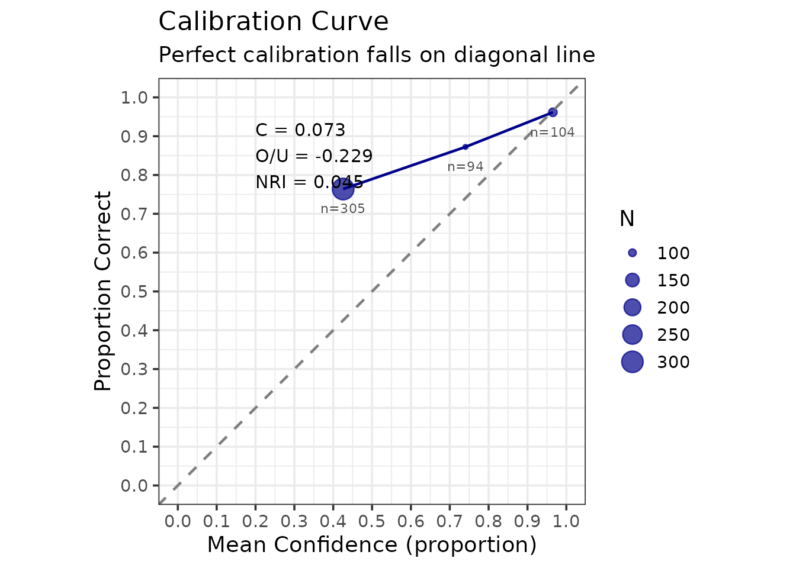
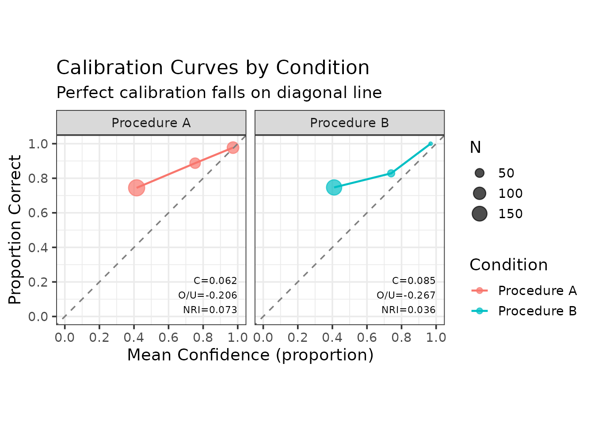
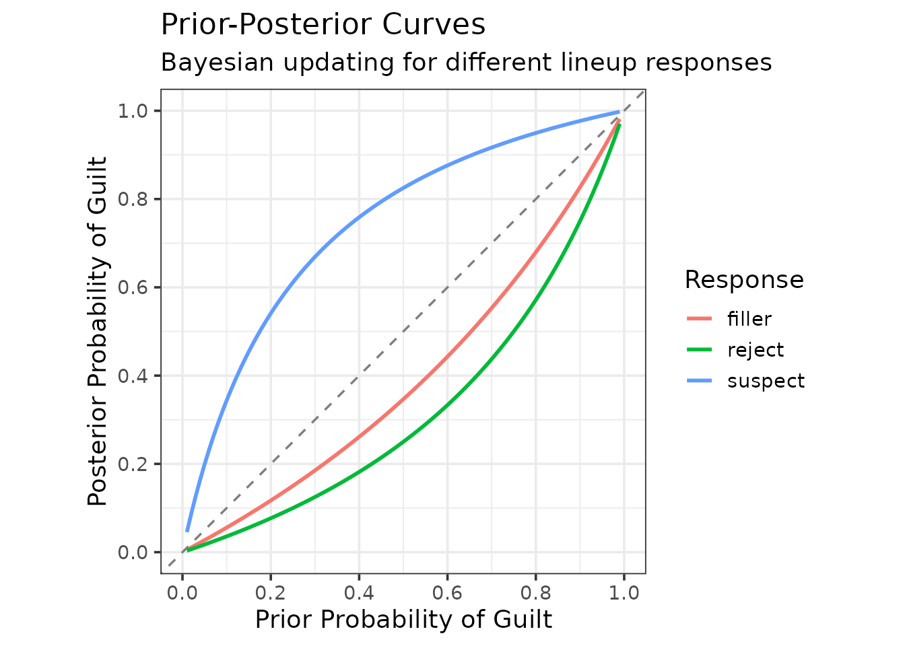
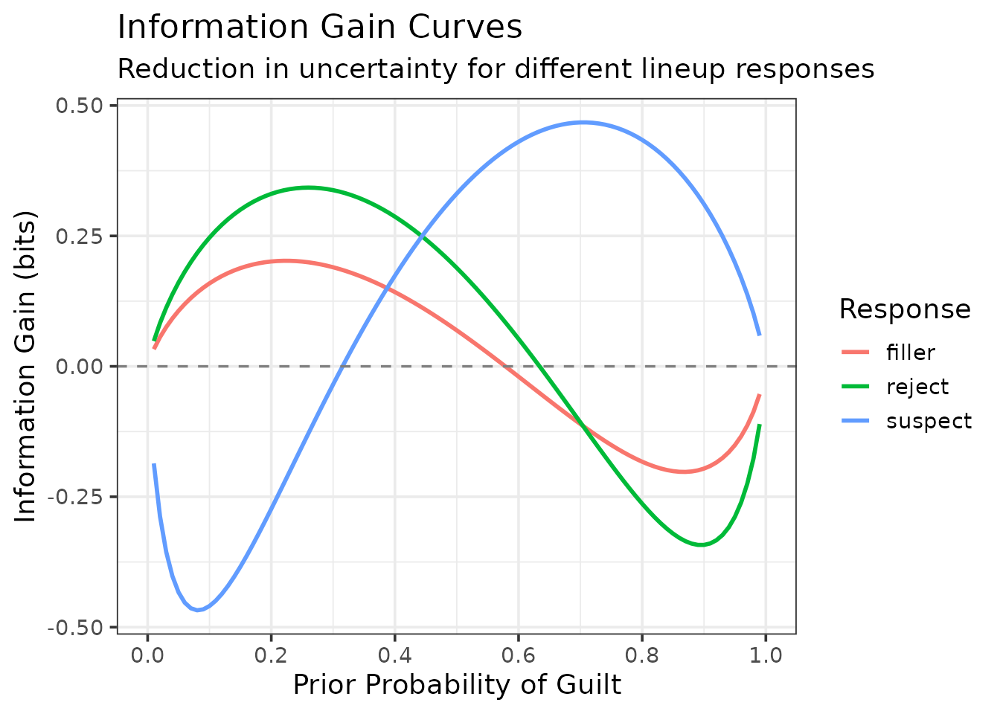
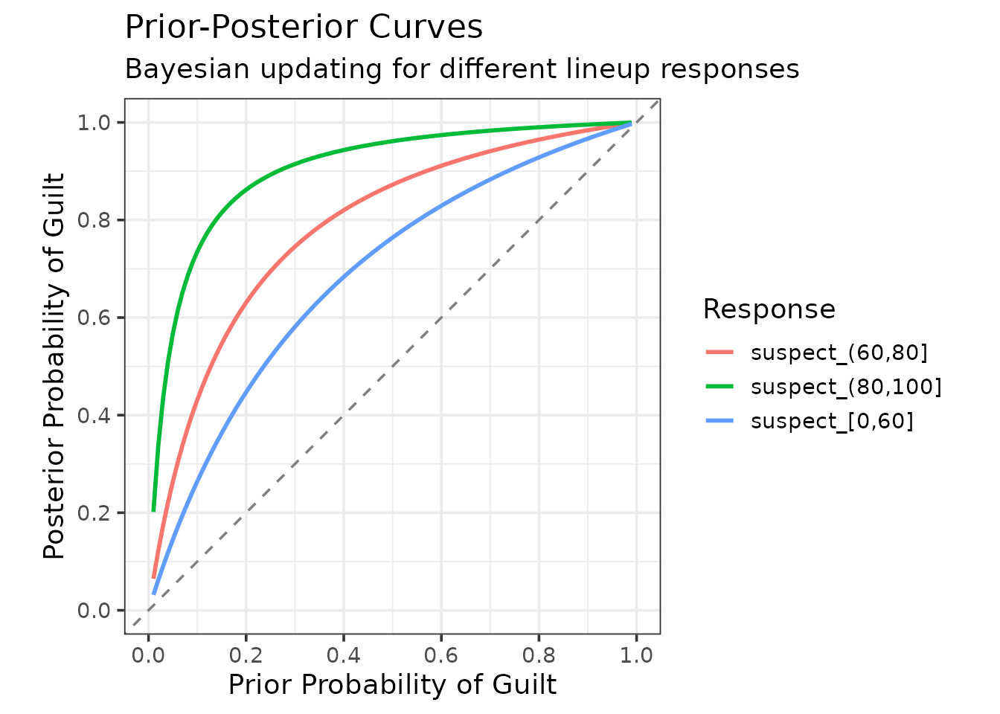
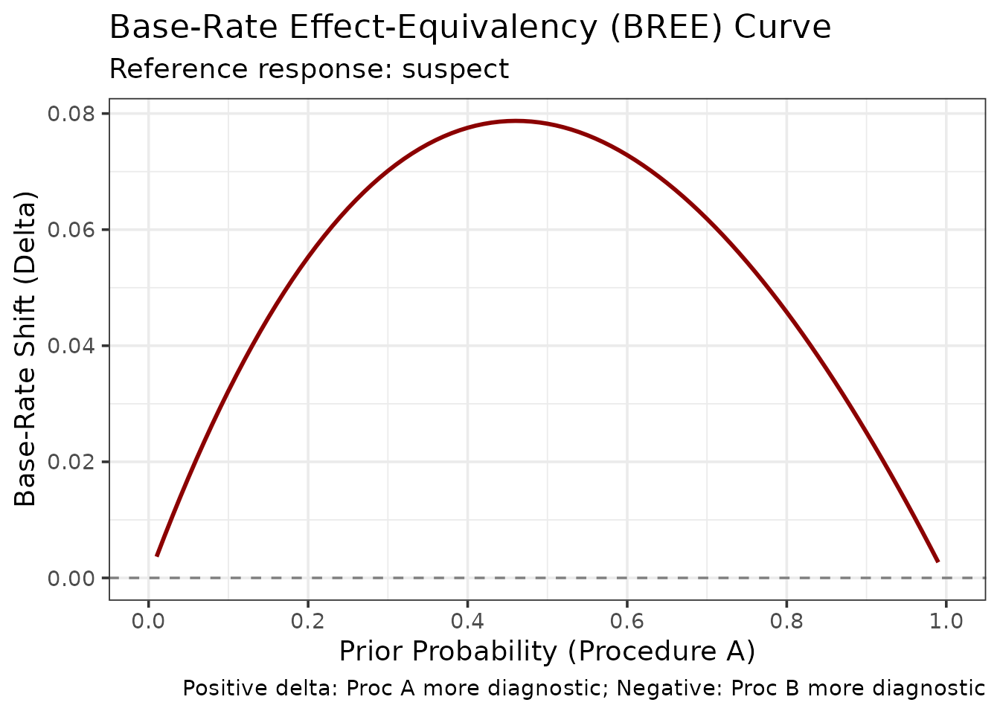
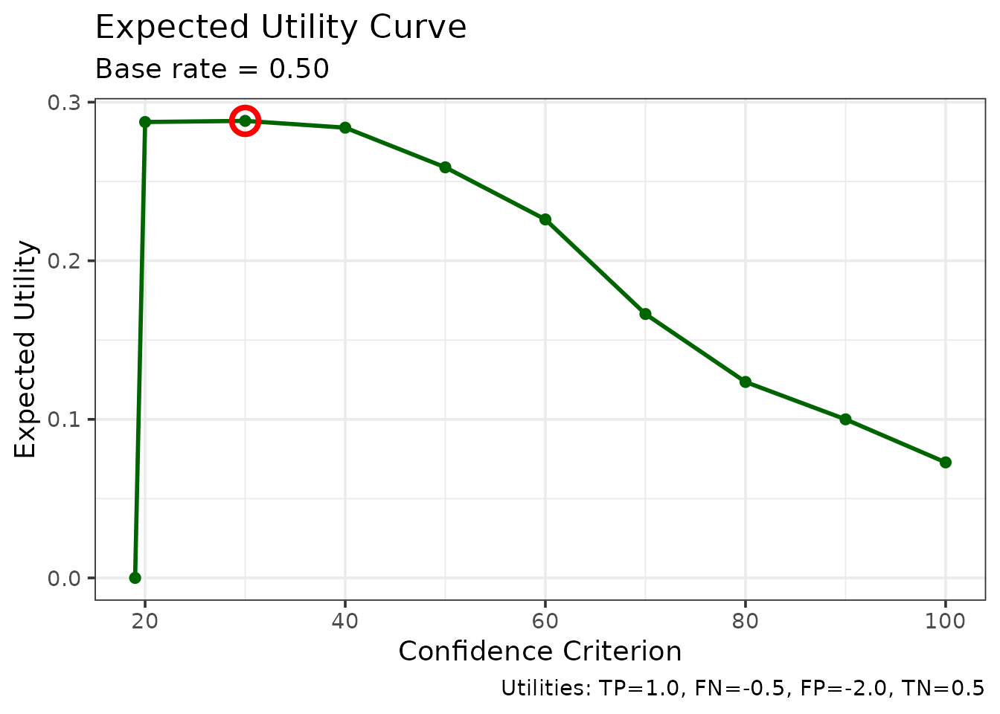
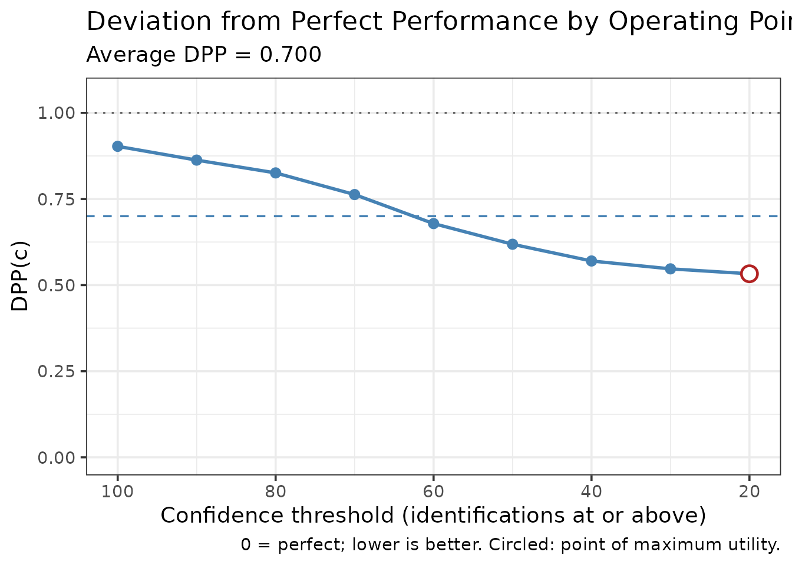
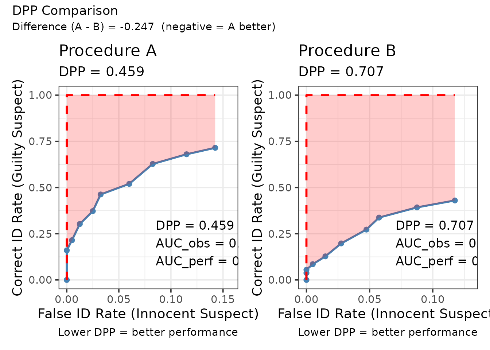
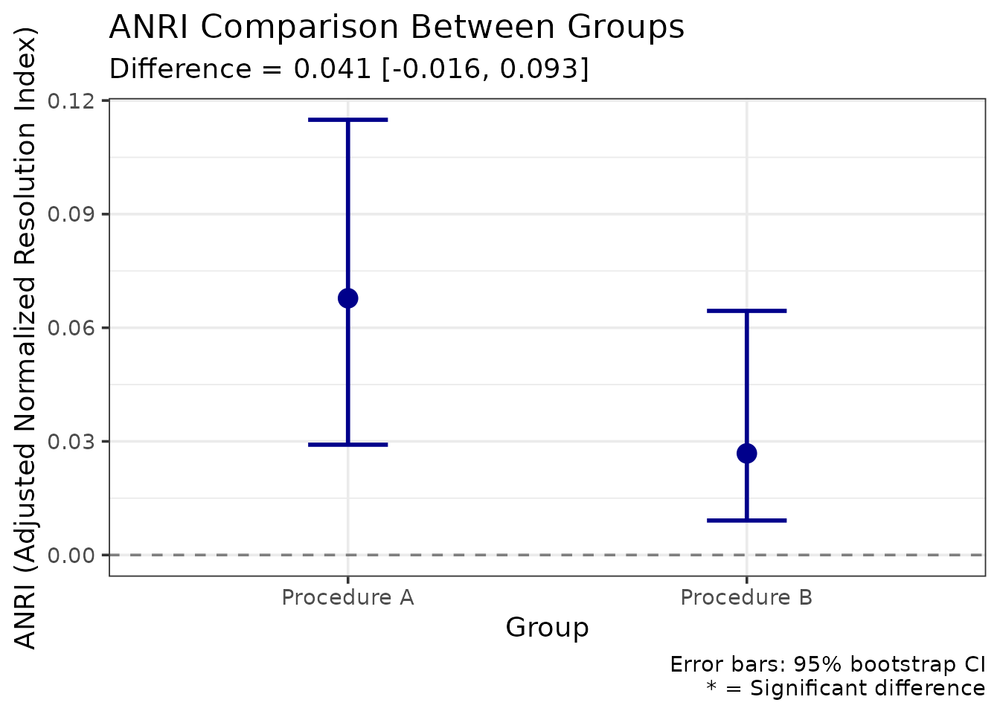

Calibration and Decision Analysis
Advanced Methods for Evaluating Eyewitness Identification Performance
Colin G. Tredoux
Tamsyn M. Naylor
2026-10-31
Source:vignettes/calibration_decision_analysis.Rmd
calibration_decision_analysis.RmdAcknowledgement. Large language models supplied by Anthropic and OpenAI were used in preparing this vignette, to assist with checking code, testing the veracity of the approaches described, and on occasion editing the text. Responsibility for the content rests with the authors.
Introduction
This vignette demonstrates five statistical methods for analyzing eyewitness identification data in r4lineups:
- Calibration Analysis - Assessing confidence-accuracy correspondence
- Bayesian Information-Gain Curves - Evaluating diagnostic value of evidence
- Expected Utility Analysis - Decision-theoretic evaluation with cost/benefit tradeoffs
- Deviation from Perfect Performance (DPP) - ROC-based truncation-robust metric
- ANRI - Bias-corrected resolution index with bootstrap inference
These methods complement the traditional lineup fairness measures by providing analyses of identification accuracy, confidence calibration, and decision-making utility.
They answer different questions.
Calibration analysis asks whether a witness’s confidence means what it appears to mean: when witnesses say they are 90% sure, are they right 90% of the time? It yields a calibration curve and three summary statistics, and it is the oldest of the five in eyewitness work (Juslin, Olsson & Winman, 1996).
Bayesian information-gain analysis asks a different question: given a particular identification response, how much should a rational observer revise their belief that the suspect is guilty? This is the framework of Wells, Yang and Smalarz (2015), and it makes explicit something the other methods leave implicit — that the evidential value of an identification depends on the prior probability of guilt, which is a property of the investigation and not of the witness.
Expected utility analysis goes one step further and asks what a policy should be. Given the costs of a wrongful identification and the benefits of a correct one, at what confidence level should an identification be acted upon? Lampinen, Smith and Wells (2019) set out the framework and show that it can disagree with ROC-based conclusions about which procedure is better.
Deviation from perfect performance (DPP) is a discriminability measure, proposed by Smith, Lampinen, Wells, Smalarz and Mackovichova (2019) as an alternative to partial area under the ROC curve. Their argument is that pAUC does not track the diagnostic utility of a lineup, and DPP does.
ANRI is a small-sample correction to the normalized resolution index. NRI (Yaniv, Yates & Smith, 1991) is positively biased when the number of confidence bins is large relative to sample size; ANRI removes that bias so that resolution can be compared across studies and tested formally.
Data Format
All methods in this vignette require a dataframe with at least the following columns:
-
target_present: Logical. TRUE if the guilty suspect is in the lineup -
identification: Character. “suspect”, “filler”, or “reject” -
confidence: Numeric. Confidence rating (any scale)
We use the built-in lineup_example dataset throughout.
It contains 700 target-present and 700 target-absent lineups of size
6.
library(r4lineups)
data(lineup_example)
head(lineup_example)
target_present lineup_member suspect_pos identification confidence
1 FALSE 2 1 filler 40
2 FALSE 3 1 filler 50
3 TRUE 2 1 filler 40
4 TRUE 1 1 suspect 80
5 TRUE 1 1 suspect 60
6 FALSE 0 1 reject 20Why there is a lineup_member column
lineup_example records two further columns, for a reason
that applies to any lineup data you collect or simulate yourself.
identification collapses a witness’s decision into three
categories. That is what the analysis functions consume, but it is
not what should be recorded. The raw datum is which
lineup member the witness chose — lineup_member,
with 0 for a rejection — together with the suspect’s
position, suspect_pos. The label is then derived:
head(classify_lineup_choices(
lineup_example[, c("lineup_member", "suspect_pos")],
k = 6
))
lineup_member suspect_pos identification
1 2 1 filler
2 3 1 filler
3 2 1 filler
4 1 1 suspect
5 1 1 suspect
6 0 1 rejectThis is important because foils are not
interchangeable. They differ in how plausible they are, and a
foil that nobody ever chooses is not a functioning alternative to the
suspect at all — it is precisely what makes a lineup unfair. Recording
only “filler” throws that information away. In
lineup_example the five foils attract very different
numbers of choices:
lineup_table(
lineup_example$lineup_member[lineup_example$lineup_member > 0],
k = 6, suspect_pos = 1
)
Lineup choices (k = 6, N = 1132)
pos: 1* 2 3 4 5 6
cnt: 503 248 203 115 53 10
* = nominated suspectlineup_example is simulated, and it is simulated at the
level of individual foils: each is given its own mean memory strength
rather than being drawn from a common distribution. See
?simulate_lineup_data and its foil_bias
argument if you want to generate data of your own on the same basis.
1. Calibration Analysis
Calibration measures how well confidence judgments correspond to accuracy. Perfect calibration means that when witnesses express X% confidence, they are correct X% of the time.
Basic Calibration
# Compute calibration with binned confidence
cal_result <- make_calibration(
lineup_example,
confidence_bins = c(0, 60, 80, 100),
choosers_only = TRUE # Analyze only suspect identifications
)
print(cal_result)
=== Lineup Calibration Analysis ===
Analysis type: Choosers only (suspect IDs)
Total N: 503
Calibration Statistics:
C (Calibration): 0.0727
O/U (Over/Under): -0.2290
NRI (Resolution): 0.0453
Overall Performance:
Mean Accuracy: 0.825
Mean Confidence: 0.596
Calibration Data by Bin:
[38;5;246m# A tibble: 3 × 7
[39m
bin n mean_confidence accuracy n_correct n_incorrect
[3m
[38;5;246m<chr>
[39m
[23m
[3m
[38;5;246m<dbl>
[39m
[23m
[3m
[38;5;246m<dbl>
[39m
[23m
[3m
[38;5;246m<dbl>
[39m
[23m
[3m
[38;5;246m<dbl>
[39m
[23m
[3m
[38;5;246m<dbl>
[39m
[23m
[38;5;250m1
[39m [0,60] 305 42.6 0.764 233 72
[38;5;250m2
[39m (60,80] 94 74.0 0.872 82 12
[38;5;250m3
[39m (80,100] 104 96.5 0.962 100 4
[38;5;246m# ℹ 1 more variable: mean_confidence_prop <dbl>
[39m
Plot: save this object first, then extract it with x$plotThe output provides three key statistics:
- C statistic: Overall calibration quality (0 = perfect, higher = worse)
- O/U (Over/Under confidence): Positive = overconfident, Negative = underconfident
- NRI (Normalized Resolution Index): Ability to discriminate accuracy levels with confidence (higher = better)
Interpreting the Calibration Plot
The calibration plot shows:
- Diagonal line: Perfect calibration
- Points above diagonal: Underconfident (accuracy exceeds confidence)
- Points below diagonal: Overconfident (confidence exceeds accuracy)
- Point size: Sample size in each bin
cal_result$plot
Accuracy rises steadily across the confidence bins, from about 76% in the lowest to about 96% in the highest, so confidence here is genuinely informative. The points sit above the diagonal, however, which means these witnesses are underconfident: they are more accurate than their stated confidence implies. That is the direction the O/U statistic reports.
The plot is an ordinary ggplot2 object, so it can be
modified and saved in the usual way. ggsave() picks its
output format from the file extension alone, so the same call writes
PNG, PDF, SVG or TIFF depending on what you ask for:
outfile <- file.path(tempdir(), "calibration_plot.png")
ggplot2::ggsave(outfile, cal_result$plot, width = 8, height = 6, dpi = 300)
# Change only the extension to change the format:
# ggsave("calibration_plot.pdf", cal_result$plot) # vector, for print
# ggsave("calibration_plot.svg", cal_result$plot) # vector, for the webCalibration by Condition
The question here is whether calibration differs between two
identification procedures. To answer it we need data from two
procedures, and lineup_example records only one, so we
simulate them.
The comparison is only meaningful if the two conditions genuinely
differ. We give Procedure A the stronger memory evidence
(d_prime = 1.8 against 1.1), as might arise
from better viewing conditions or a better-constructed lineup, and give
the two lineups different foil quality as well. Note that both are
seeded, so the results below are reproducible rather than changing on
every rebuild.
# Procedure A: stronger evidence, and foils that are reasonable alternatives
data_proc_a <- as.data.frame(simulate_lineup_data(
n_tp = 400, n_ta = 400, d_prime = 1.8, c_criterion = 0.9,
lineup_size = 6, conf_levels = 9,
foil_bias = c(0.4, 0.2, 0.0, -0.3, -0.8), seed = 101
))
# Procedure B: weaker evidence, and one near-useless foil
data_proc_b <- as.data.frame(simulate_lineup_data(
n_tp = 400, n_ta = 400, d_prime = 1.1, c_criterion = 0.9,
lineup_size = 6, conf_levels = 9,
foil_bias = c(0.5, 0.1, -0.2, -0.9, -2.0), seed = 102
))
# Put confidence on the same 20-100 scale used by lineup_example
conf_scale <- round(seq(20, 100, length.out = 9))
data_proc_a$confidence <- conf_scale[data_proc_a$confidence]
data_proc_b$confidence <- conf_scale[data_proc_b$confidence]
# Combine into one frame with a condition variable
procedures <- rbind(
transform(data_proc_a, procedure = "Procedure A"),
transform(data_proc_b, procedure = "Procedure B")
)
cal_by_cond <- make_calibration_by_condition(
procedures,
condition_vars = "procedure",
confidence_bins = c(0, 60, 80, 100)
)
knitr::kable(
cal_by_cond$condition_summary, digits = 3,
caption = "Calibration statistics by procedure, simulated data (choosers only)."
)| condition | n | C | OU | NRI | overall_accuracy | overall_confidence |
|---|---|---|---|---|---|---|
| Procedure A | 343 | 0.062 | -0.206 | 0.073 | 0.834 | 0.628 |
| Procedure B | 219 | 0.085 | -0.267 | 0.036 | 0.785 | 0.519 |
The per-bin detail for each procedure is in
cal_by_cond$by_condition. The object does not carry a plot;
draw one with make_calibration_by_condition_gg():
make_calibration_by_condition_gg(cal_by_cond)
2. Bayesian Information-Gain Analysis
Bayesian analysis evaluates how much an identification response changes our belief about guilt, quantified as information gain (reduction in uncertainty). The framework is that of Wells, Yang and Smalarz (2015).
The arithmetic, briefly
Let denote the event that the suspect is guilty and a particular identification response — say, a suspect identification made with confidence above 80. Bayes’ theorem gives the posterior probability of guilt as
The two conditional probabilities are estimated directly from the data: is the proportion of target-present witnesses who gave response , and the proportion of target-absent witnesses who did. Their ratio is the likelihood ratio,
and it is the whole of what the identification contributes. An
of 1 means the response is uninformative; larger values point towards
guilt, smaller towards innocence. make_bayes_curves()
returns these quantities in $likelihoods:
lik <- make_bayes_curves(
lineup_example,
response_categories = "confidence",
confidence_bins = c(0, 60, 80, 100)
)$likelihoods
knitr::kable(
transform(
as.data.frame(lik)[, c("response", "p_x_given_guilty",
"p_x_given_innocent", "n_guilty", "n_innocent")],
LR = round(lik$p_x_given_guilty / lik$p_x_given_innocent, 2)
),
digits = 3, row.names = FALSE,
caption = "Response likelihoods and likelihood ratios, lineup_example."
)| response | p_x_given_guilty | p_x_given_innocent | n_guilty | n_innocent | LR |
|---|---|---|---|---|---|
| filler_(60,80] | 0.057 | 0.084 | 40 | 59 | 0.68 |
| filler_(80,100] | 0.019 | 0.043 | 13 | 30 | 0.43 |
| filler_[0,60] | 0.236 | 0.460 | 165 | 322 | 0.51 |
| reject_[0,60] | 0.096 | 0.287 | 67 | 201 | 0.33 |
| suspect_(60,80] | 0.117 | 0.017 | 82 | 12 | 6.83 |
| suspect_(80,100] | 0.143 | 0.006 | 100 | 4 | 25.00 |
| suspect_[0,60] | 0.333 | 0.103 | 233 | 72 | 3.24 |
A high-confidence suspect identification carries a likelihood ratio of roughly 25 here, while a rejection carries one of about 0.3 — that is, it is evidence against guilt. Note also that the likelihood ratio, not the posterior, is the portable quantity: it belongs to the identification procedure, whereas the posterior additionally depends on the prior, which belongs to the investigation.
One practical warning. If no target-absent witness ever produces a
given response, the estimated
is zero, the likelihood ratio is infinite, and the posterior curve is
pinned at 1.0 for every prior. That is almost always a sign of too few
observations or too narrow a bin rather than of perfectly diagnostic
evidence, and make_bayes_curves() warns when it
happens.
Prior-Posterior Curves
# Compute Bayesian curves for simple responses
bayes_result <- make_bayes_curves(
lineup_example,
response_categories = "simple", # "suspect", "filler", "reject"
prior_grid = seq(0.01, 0.99, 0.01)
)
print(bayes_result)
$curves
[38;5;246m# A tibble: 297 × 4
[39m
response prior posterior information_gain
[3m
[38;5;246m<chr>
[39m
[23m
[3m
[38;5;246m<dbl>
[39m
[23m
[3m
[38;5;246m<dbl>
[39m
[23m
[3m
[38;5;246m<dbl>
[39m
[23m
[38;5;250m 1
[39m filler 0.01 0.005
[4m3
[24m
[4m3
[24m 0.032
[4m9
[24m
[38;5;250m 2
[39m filler 0.02 0.010
[4m7
[24m 0.056
[4m0
[24m
[38;5;250m 3
[39m filler 0.03 0.016
[4m1
[24m 0.075
[4m2
[24m
[38;5;250m 4
[39m filler 0.04 0.021
[4m6
[24m 0.091
[4m8
[24m
[38;5;250m 5
[39m filler 0.05 0.027
[4m2
[24m 0.106
[38;5;250m 6
[39m filler 0.06 0.032
[4m7
[24m 0.119
[38;5;250m 7
[39m filler 0.07 0.038
[4m4
[24m 0.131
[38;5;250m 8
[39m filler 0.08 0.044
[4m1
[24m 0.141
[38;5;250m 9
[39m filler 0.09 0.049
[4m8
[24m 0.151
[38;5;250m10
[39m filler 0.1 0.055
[4m7
[24m 0.159
[38;5;246m# ℹ 287 more rows
[39m
$likelihoods
[38;5;246m# A tibble: 3 × 5
[39m
response p_x_given_guilty p_x_given_innocent n_guilty n_innocent
[3m
[38;5;246m<chr>
[39m
[23m
[3m
[38;5;246m<dbl>
[39m
[23m
[3m
[38;5;246m<dbl>
[39m
[23m
[3m
[38;5;246m<int>
[39m
[23m
[3m
[38;5;246m<dbl>
[39m
[23m
[38;5;250m1
[39m filler 0.311 0.587 218 411
[38;5;250m2
[39m reject 0.095
[4m7
[24m 0.287 67 201
[38;5;250m3
[39m suspect 0.593 0.126 415 88
$response_counts
[38;5;246m# A tibble: 3 × 3
[39m
response n_guilty n_innocent
[3m
[38;5;246m<chr>
[39m
[23m
[3m
[38;5;246m<int>
[39m
[23m
[3m
[38;5;246m<dbl>
[39m
[23m
[38;5;250m1
[39m filler 218 411
[38;5;250m2
[39m reject 67 201
[38;5;250m3
[39m suspect 415 88
$n_guilty
[1] 700
$n_innocent
[1] 700
$response_categories
[1] "simple"
$lineup_size
[1] 6
$innocent_suspect_method
[1] "designated"
# Plot prior-posterior relationships
plot_bayes_prior_posterior(bayes_result)
The plot shows how each response type updates prior belief:
- Lines above diagonal: Evidence increases guilt belief (diagnostic of guilt)
- Lines below diagonal: Evidence decreases guilt belief (diagnostic of innocence)
- Distance from the diagonal: at a given prior, the further a curve lies from the diagonal, the larger the likelihood ratio of that response. Compare curves at the same prior, not by their local slopes.
The prior-posterior curve is due to Wells, Yang and Smalarz (2015), who introduced it along with the base-rate effect-equivalency curve used later in this vignette. The implementation here is written directly from that paper.
On the shape of these curves. They are curved, and that curvature is not an artefact of any smoothing: no loess or spline is fitted anywhere in these plots. For a response with likelihood ratio , the posterior as a function of the prior is The curvature has one sign throughout: the curve is concave (bowed above the diagonal) when , convex (bowed below it) when , and the diagonal itself when . It is not S-shaped. What the display shows is that the same response moves belief most, in absolute terms, at middling priors, and very little when the prior is already near 0 or near 1.
Information Gain
Information gain quantifies uncertainty reduction, measured in bits: the entropy of the prior minus the entropy of the posterior. Where the posterior curve says where belief ends up, information gain says how much uncertainty was removed:
plot_bayes_information_gain(bayes_result)
Interpretation:
- Positive values: the response moves belief towards certainty (towards 0 or 1), so uncertainty falls.
- Negative values: the response moves belief towards 50/50, so uncertainty rises. That is not a sign of misleading evidence: a suspect identification given a low prior raises the probability of guilt towards .5, which is the correct update and also the most uncertain state.
- Where each curve peaks depends on the direction of the evidence. Responses that point to guilt (suspect identifications) gain most at priors above .5, where they push belief towards 1; responses that point to innocence (rejections, filler identifications) gain most at priors below .5.
The curves bend sharply because binary entropy changes fastest near 0 and 1. That shape is a property of the measure, not of these data or of any smoothing.
Confidence-Based Bayesian Analysis
Analyze by confidence level:
bayes_conf <- make_bayes_curves(
lineup_example,
response_categories = "confidence",
confidence_bins = c(0, 60, 80, 100)
)
# Get suspect responses only
suspect_responses <- grep("^suspect_", unique(bayes_conf$curves$response), value = TRUE)
plot_bayes_prior_posterior(bayes_conf, selected_responses = suspect_responses)
Splitting suspect identifications by confidence separates three quite different kinds of evidence. The highest-confidence band sits well above the others across the whole range of priors, which is the Bayesian restatement of the calibration result found earlier: high-confidence identifications from this procedure are worth considerably more than low-confidence ones.
The three curves stay clearly apart and none is pinned to the top of the plot. A curve that is pinned flat at 1.0 signals the zero-cell problem described above, not evidence of unusual strength.
Base-Rate Equivalency of Evidence (BREE)
The base-rate effect-equivalency curve, also from Wells, Yang and Smalarz (2015), answers a question that comes up whenever two procedures are compared and neither dominates: how much better is one than the other, expressed in units anyone can interpret?
The idea is to express the difference as an exchange rate between base rates. Suppose Procedure A, applied to a case with a 20% prior probability of guilt, yields a certain posterior after a suspect identification. We can then ask what prior Procedure B would need in order to reach that same posterior. If B needs a 40% prior to get where A got from 20%, then A is worth as much as a doubling of the base rate — and a doubling of the base rate is something an investigator has an intuition about, in a way that a difference in pAUC is not.
Plotting that correspondence for every prior gives the BREE curve.
plot_bree() draws the base-rate shift
= prior needed by B − prior used by A, against A’s prior. The dashed
horizontal line at
is the null result of no difference; positive
means B needs the larger prior, so A’s suspect identification is the
more diagnostic, and the further the curve lies above zero, the larger
A’s advantage. (Plotting B’s prior directly against A’s would put the
reference on the diagonal instead, with A’s advantage above it.)
The two procedures are the ones simulated in the Calibration by Condition section:
data_proc_a and data_proc_b are data frames of
target-present and target-absent identifications with confidence, one
row per witness (not lineup vectors). Procedure A has the stronger
memory evidence (d′ = 1.8 against 1.1).
bree_result <- make_bree_curve(
data_proc_a,
data_proc_b,
reference_response = "suspect"
)
plot_bree(bree_result)
The shift is positive throughout, from 0.003 to 0.079, so Procedure B always needs a higher prior probability of guilt to reach the posterior that A reaches — which is to say that a suspect identification from Procedure A is worth more. At a prior of 0.2 for A, B needs 0.255. The shift is largest, 0.079, near a prior of 0.46, and shrinks towards both ends of the scale, where neither procedure’s evidence can move belief much.
3. Expected Utility Analysis
The methods so far describe how good a procedure is. Expected utility analysis asks what should be done about it, and it is the framework of Lampinen, Smith and Wells (2019).
The motivating observation is that discriminability measures are silent about consequences. An ROC curve treats a missed identification of a guilty suspect and the identification of an innocent one as two kinds of error, without saying how much worse one is than the other. But everyone agrees they are not equally bad, and once that is admitted, the question of which procedure is preferable cannot be settled without saying by how much. Lampinen et al. show that ROC analysis and expected utility analysis can rank the same two procedures differently — the dissociation their title refers to — so the choice of framework is not a technicality.
Define Utility Matrix
The costs and benefits must be stated explicitly. That is often felt to be the uncomfortable part of the exercise, but the values are being assumed either way; utility analysis only makes them visible and open to argument.
Four outcomes need a value, on any common scale:
utility_matrix <- c(
tp = 1.0, # Correct identification of a guilty suspect: a benefit
fn = -0.5, # Failing to identify a guilty suspect: a cost
fp = -2.0, # Identifying an innocent suspect: the most serious cost
tn = 0.5 # Correctly declining to identify an innocent suspect: a benefit
)The relative magnitudes carry the argument. Here a wrongful
identification is set at four times the cost of a missed one
(-2.0 against -0.5), and twice the absolute
value of a correct identification’s benefit. That is a moral and legal
judgement, not a statistical one, and it is the natural place for
disagreement. Someone who set fp = -10 would be expressing
Blackstone’s ratio; the analysis below would then recommend a
considerably stricter confidence threshold. Because the choice is this
important, report the sensitivity of the conclusion to it, which is what
the base-rate section does for the other key assumption.
Compute Utility Curves
# Compute expected utility across confidence criteria
util_result <- make_utility_curves(
lineup_example,
base_rate = 0.5, # Assume 50% guilty suspects
utility_matrix = utility_matrix,
lineup_size = 6
)
print(util_result)
$utility_data
[38;5;246m# A tibble: 10 × 7
[39m
criterion strategy hit_rate false_alarm_rate expected_utility n_ids_tp
[3m
[38;5;246m<dbl>
[39m
[23m
[3m
[38;5;246m<chr>
[39m
[23m
[3m
[38;5;246m<dbl>
[39m
[23m
[3m
[38;5;246m<dbl>
[39m
[23m
[3m
[38;5;246m<dbl>
[39m
[23m
[3m
[38;5;246m<dbl>
[39m
[23m
[38;5;250m 1
[39m 100 threshold 0.097
[4m1
[24m 0 0.072
[4m9
[24m 68
[38;5;250m 2
[39m 90 threshold 0.143 0.005
[4m7
[24m
[4m1
[24m 0.1 100
[38;5;250m 3
[39m 80 threshold 0.189 0.014
[4m3
[24m 0.124 132
[38;5;250m 4
[39m 70 threshold 0.26 0.022
[4m9
[24m 0.166 182
[38;5;250m 5
[39m 60 threshold 0.351 0.03 0.226 246
[38;5;250m 6
[39m 50 threshold 0.436 0.054
[4m3
[24m 0.259 305
[38;5;250m 7
[39m 40 threshold 0.507 0.077
[4m1
[24m 0.284 355
[38;5;250m 8
[39m 30 threshold 0.556 0.103 0.288 389
[38;5;250m 9
[39m 20 threshold 0.593 0.126 0.288 415
[38;5;250m10
[39m 101 reject_all 0 0 0 0
[38;5;246m# ℹ 1 more variable: n_ids_ta <dbl>
[39m
$max_utility
$max_utility$expected_utility
tp
0.2882143
$max_utility$criterion
[1] 30
$max_utility$strategy
[1] "threshold"
$max_utility$hit_rate
[1] 0.5557143
$max_utility$false_alarm_rate
[1] 0.1028571
$avg_utility
[1] 0.2008333
$utility_all_ids
tp
0.2875
$base_rate
[1] 0.5
$utility_matrix
tp fn fp tn
1.0 -0.5 -2.0 0.5
$n_target_present
[1] 700
$n_target_absent
[1] 700
$innocent_suspect_method
[1] "designated"
$criteria
[1] "confidence"
# Plot utility curves
plot_utility_curves(util_result)
The plot shows:
- Expected utility at each confidence threshold
- Optimal threshold: Maximum utility point
- Comparison with “all identifications” strategy
Reading it from right to left: a very strict threshold acts on almost nothing, so little is gained and little is risked. Relaxing the threshold admits identifications that are mostly correct, and utility climbs. Past the optimum, each further relaxation admits more wrongful identifications than correct ones, and because those carry four times the weight, utility falls away again. The maximum is the criterion at which the marginal identification is exactly worth acting on.
This is the shape Lampinen et al. (2019) describe. Note that the curve is usually rather flat near its peak, which is reassuring for practice: thresholds somewhat either side of the optimum lose very little, so the recommendation does not depend on locating the maximum precisely.
Compare Procedures
max_utility is a list rather than a single number: it
reports the best expected utility together with the criterion that
achieves it, and the hit and false-alarm rates at that criterion. Ask
for the element you want.
The optimum can be a confidence criterion or the decision to reject
every identification. max_utility$strategy says which, so a
small helper turns the result into a rule that can be stated:
utility_rule <- function(m) {
if (m$strategy == "reject_all") "Act on no identification"
else paste0("Act on confidence >= ", m$criterion)
}
# Compare the two procedures simulated in the Calibration by Condition section
util_proc_a <- make_utility_curves(data_proc_a, base_rate = 0.5,
utility_matrix = utility_matrix)
util_proc_b <- make_utility_curves(data_proc_b, base_rate = 0.5,
utility_matrix = utility_matrix)
knitr::kable(
data.frame(
Procedure = c("A (d' = 1.8)", "B (d' = 1.1)"),
`Max expected utility` = round(c(util_proc_a$max_utility$expected_utility,
util_proc_b$max_utility$expected_utility), 3),
`Optimal rule` = c(utility_rule(util_proc_a$max_utility),
utility_rule(util_proc_b$max_utility)),
check.names = FALSE
),
caption = "Expected utility at the optimal confidence criterion, simulated data (200 target-present and 200 target-absent lineups per procedure)."
)| Procedure | Max expected utility | Optimal rule |
|---|---|---|
| A (d’ = 1.8) | 0.367 | Act on confidence >= 40 |
| B (d’ = 1.1) | 0.185 | Act on confidence >= 30 |
The procedure with the stronger evidence supports both a higher expected utility and a stricter criterion: it can afford to wait for high-confidence identifications because it gets more of them.
Sensitivity to Base Rate
Examine how utility depends on base rate:
# Test multiple base rates
base_rates <- c(0.2, 0.5, 0.8)
sensitivity <- do.call(rbind, lapply(base_rates, function(br) {
util <- make_utility_curves(lineup_example, base_rate = br,
utility_matrix = utility_matrix,
lineup_size = 6)
data.frame(
`Base rate` = br,
`Max expected utility` = round(util$max_utility$expected_utility, 3),
`Optimal rule` = utility_rule(util$max_utility),
check.names = FALSE
)
}))
knitr::kable(
sensitivity,
row.names = FALSE,
caption = "Sensitivity of expected utility to the assumed base rate, lineup_example data."
)| Base rate | Max expected utility | Optimal rule |
|---|---|---|
| 0.2 | 0.345 | Act on confidence >= 60 |
| 0.5 | 0.288 | Act on confidence >= 30 |
| 0.8 | 0.349 | Act on confidence >= 20 |
Base rate is very important. When guilty suspects are rare, any given identification is more likely to be a false one, so the optimal criterion becomes stricter: here “act on confidence >= 60” at a base rate of 0.2, against “act on confidence >= 20” at 0.8. The attainable utility is not ordered by base rate in any simple way, because it also depends on how the cost matrix values the outcomes that become more common; here it is 0.345, 0.288 and 0.349 at the three base rates. Compare utilities across procedures at the same base rate, not across base rates.
4. Deviation from Perfect Performance (DPP)
DPP quantifies how far an ROC curve deviates from perfect performance, and it is robust to ROC truncation — that is, to witnesses not using the full confidence scale.
It was proposed by Smith, Lampinen, Wells, Smalarz and Mackovichova (2019) as a replacement for partial area under the ROC curve, but it is contested. Lineup ROC curves cannot be traced over their full range: the observed false-alarm rate only extends as far as witnesses’ willingness to choose takes it, and that endpoint differs between procedures. pAUC handles this by integrating over a restricted region, but the choice of region is then itself a problem. Take the region from the procedure with the shorter curve and information from the other is discarded; take a common region and the comparison is made somewhere neither procedure was actually operating. Smith et al. argue that pAUC consequently fails to track which procedure has greater diagnostic utility, and that DPP does.
DPP takes a different approach. Rather than integrating over a region, it is computed at every operating point of the ROC, that is, at every cumulative confidence threshold, and then averaged. At an operating point (their Equation 2),
where Culprit() is the culprit (correct) identification rate and Innocent() the innocent-suspect identification rate at that threshold. DPP() is 0 for perfect performance (every culprit identified and no innocent suspect), 1 for any point on the chance diagonal, and 2 for the worst possible performance. When culprits are present in half of all lineups and the two errors are equally costly, DPP() is one minus the expected utility at that threshold, so the average DPP measures the average utility of the procedure across the confidence levels witnesses actually use. Because every procedure is evaluated at its own operating points, curves of different lengths remain comparable.
This is an active disagreement rather than settled ground, and the pAUC vignette takes up the other side of it.
Basic DPP
dpp_result <- make_dpp(
lineup_example,
lineup_size = 6
)
dpp_result$dpp
[1] 0.7001587
dpp_result$dpp_by_point
[38;5;246m# A tibble: 9 × 4
[39m
confidence culprit_rate innocent_rate dpp
[3m
[38;5;246m<dbl>
[39m
[23m
[3m
[38;5;246m<dbl>
[39m
[23m
[3m
[38;5;246m<dbl>
[39m
[23m
[3m
[38;5;246m<dbl>
[39m
[23m
[38;5;250m1
[39m 100 0.097
[4m1
[24m 0 0.903
[38;5;250m2
[39m 90 0.143 0.005
[4m7
[24m
[4m1
[24m 0.863
[38;5;250m3
[39m 80 0.189 0.014
[4m3
[24m 0.826
[38;5;250m4
[39m 70 0.26 0.022
[4m9
[24m 0.763
[38;5;250m5
[39m 60 0.351 0.03 0.679
[38;5;250m6
[39m 50 0.436 0.054
[4m3
[24m 0.619
[38;5;250m7
[39m 40 0.507 0.077
[4m1
[24m 0.57
[38;5;250m8
[39m 30 0.556 0.103 0.547
[38;5;250m9
[39m 20 0.593 0.126 0.533
plot_dpp(dpp_result)
The table lists each operating point, from the strictest threshold to the most lenient, which counts every identification. The plot shows DPP() at each of them, the average as a dashed line, and the chance reference at 1. The circled point has the lowest DPP and so the highest utility; it is the threshold at which acting on identifications would do the most good under equal costs and a base rate of .5.
Different costs and base rates
Smith et al.’s Equation 3 weights the two errors:
where is the cost of identifying an innocent suspect relative to missing the culprit, and is the base rate of culprit presence. With and this is half of Equation 2. Weighted values no longer range from 0 to 2, so they are comparable only with other values computed with the same weights.
Compare DPP Between Groups
The comparison is the usual use. Here the two simulated procedures
from earlier differ in the strength of the evidence they generate, so
Procedure A should show the smaller deviation. As Smith et al. did,
compare_dpp() tests the difference with a nonparametric
bootstrap, resampling target-present and target-absent trials separately
within each procedure:
dpp_comparison <- compare_dpp(
data_proc_a,
data_proc_b,
lineup_size = 6,
n_bootstrap = 500,
seed = 2026
)
dpp_comparison
=== DPP Comparison ===
Average DPP, procedure A: 0.6022
Average DPP, procedure B: 0.8247
Difference (A - B): -0.2225 (negative = A better)
Bootstrap SE: 0.0268
95% percentile interval: [-0.2797, -0.1726] (500 resamples)
plot_dpp_comparison(dpp_comparison)
A negative difference favours Procedure A. The interval is a percentile bootstrap interval for the difference in average DPP.
5. ANRI: Adjusted Normalized Resolution Index
ANRI corrects NRI for small-sample bias, making it more appropriate for hypothesis testing and group comparisons.
Resolution is the third of the properties confidence can have, alongside calibration and over/underconfidence. A witness could be poorly calibrated — systematically over- or underconfident — and yet have excellent resolution, if their confidence still ranked correct identifications above incorrect ones. Resolution is arguably the most important property in practice, since a systematic bias can be corrected for once known, whereas an inability to discriminate cannot.
NRI (Yaniv, Yates & Smith, 1991) measures this, but it is positively biased: some apparent resolution arises from sampling noise alone. Splitting a sample into more confidence bins gives noise more opportunity to look like signal, so the bias grows with the number of bins and shrinks with sample size. Two studies using different numbers of bins therefore cannot have their NRIs compared directly. ANRI estimates and removes that bias.
Basic ANRI
# Compute ANRI
anri_result <- compute_anri(
lineup_example,
confidence_bins = c(0, 60, 80, 100)
)
print(anri_result)
$anri
[1] 0.04145948
$nri
[1] 0.04527077
$n_total
[1] 503
$n_bins
[1] 3
$calibration_data
[38;5;246m# A tibble: 3 × 7
[39m
bin n mean_confidence accuracy n_correct n_incorrect
[3m
[38;5;246m<chr>
[39m
[23m
[3m
[38;5;246m<dbl>
[39m
[23m
[3m
[38;5;246m<dbl>
[39m
[23m
[3m
[38;5;246m<dbl>
[39m
[23m
[3m
[38;5;246m<dbl>
[39m
[23m
[3m
[38;5;246m<dbl>
[39m
[23m
[38;5;250m1
[39m [0,60] 305 42.6 0.764 233 72
[38;5;250m2
[39m (60,80] 94 74.0 0.872 82 12
[38;5;250m3
[39m (80,100] 104 96.5 0.962 100 4
[38;5;246m# ℹ 1 more variable: mean_confidence_prop <dbl>
[39m
$overall_accuracy
[1] 0.8250497
$overall_confidence
[1] 0.5960239
$choosers_only
[1] TRUEANRI is always ≤ NRI because it removes positive bias. The bias correction is larger when:
- Sample size N is small
- Number of bins J is large
- The ratio J/N is high
Bootstrap Confidence Intervals
A point estimate is not much use on its own, so the interval comes
from a bootstrap. n_bootstrap = 100 keeps this vignette
quick; use 2000 or more for anything you intend to report.
anri_boot <- bootstrap_anri(
lineup_example,
confidence_bins = c(0, 60, 80, 100),
n_bootstrap = 100,
conf_level = 0.95,
seed = 123
)
knitr::kable(
data.frame(
Statistic = c("NRI (uncorrected)", "ANRI (bias-corrected)"),
Estimate = round(c(anri_boot$nri, anri_boot$anri), 3),
`95% CI` = c("—", sprintf("[%.3f, %.3f]",
anri_boot$ci_lower, anri_boot$ci_upper)),
check.names = FALSE
),
row.names = FALSE,
caption = "Resolution with bootstrap interval, lineup_example, 3 confidence bins."
)| Statistic | Estimate | 95% CI |
|---|---|---|
| NRI (uncorrected) | 0.045 | — |
| ANRI (bias-corrected) | 0.041 | [0.025, 0.068] |
No interval is given for NRI because it would add nothing. ANRI is a linear rescaling of NRI, , so with 503 suspect identifications and 3 bins the two differ only by the bias correction (0.045 against 0.041 here). An interval for NRI would be the ANRI interval shifted upward by that bias, so it is ANRI and its interval that should be reported and compared.
Compare Groups
The comparison uses the two simulated procedures, which differ in the strength of the evidence they generate. Because they were simulated with genuinely different parameters, any difference found here reflects that design rather than chance group assignment.
anri_comparison <- compare_anri(
procedures,
group_var = "procedure",
confidence_bins = c(0, 60, 80, 100),
n_bootstrap = 100,
seed = 456
)
print(anri_comparison)
$anri_group1
[1] 0.06778469
$anri_group2
[1] 0.02682759
$nri_group1
[1] 0.07322035
$nri_group2
[1] 0.03571501
$difference
[1] 0.04095711
$ci_lower
[1] -0.0162656
$ci_upper
[1] 0.09288628
$conf_level
[1] 0.95
$significant
2.5%
FALSE
$group_names
[1] "Procedure A" "Procedure B"
$n_bootstrap
[1] 100
$n_bootstrap_requested
[1] 100
$n_failed
[1] 0
$bootstrap_results_group1
$bootstrap_results_group1$anri
[1] 0.06778469
$bootstrap_results_group1$nri
[1] 0.07322035
$bootstrap_results_group1$ci_lower
[1] 0.02912137
$bootstrap_results_group1$ci_upper
[1] 0.1149089
$bootstrap_results_group1$conf_level
[1] 0.95
$bootstrap_results_group1$n_bootstrap
[1] 100
$bootstrap_results_group1$n_bootstrap_requested
[1] 100
$bootstrap_results_group1$n_failed
[1] 0
$bootstrap_results_group1$n_total
[1] 343
$bootstrap_results_group1$n_bins
[1] 3
$bootstrap_results_group1$bootstrap_distribution
[1] 0.06708598 0.06570604 0.08047661 0.04987933 0.07221240 0.06148205
[7] 0.07212585 0.08571190 0.06816675 0.06999423 0.05916390 0.09510135
[13] 0.03142914 0.04505713 0.05639861 0.09915104 0.03885619 0.07716533
[19] 0.05518367 0.06160329 0.08011800 0.03582855 0.05369086 0.08262844
[25] 0.11270127 0.09078520 0.11118346 0.06107025 0.11095935 0.03686786
[31] 0.07824433 0.10365266 0.06466421 0.07758830 0.06246753 0.04141894
[37] 0.08328425 0.08469806 0.08008407 0.06726736 0.02703340 0.06715568
[43] 0.06081143 0.04384714 0.06404480 0.08060125 0.09375399 0.04073706
[49] 0.05561147 0.06537103 0.08259529 0.07587945 0.06234151 0.11957211
[55] 0.06314098 0.02570420 0.04332888 0.09238761 0.10012490 0.11869072
[61] 0.05276179 0.09538591 0.07677354 0.04634813 0.08990006 0.05857359
[67] 0.10507931 0.07623093 0.11105741 0.07602279 0.08272019 0.04113382
[73] 0.08082205 0.05360715 0.09284835 0.01839824 0.03796410 0.07069711
[79] 0.07777091 0.08588510 0.11690619 0.06030880 0.10590118 0.10782745
[85] 0.06639759 0.06499843 0.07933454 0.06463416 0.09112998 0.06640864
[91] 0.06755599 0.07182240 0.09123954 0.07012033 0.09326807 0.08488978
[97] 0.08600358 0.07038152 0.06785717 0.03480324
$bootstrap_results_group2
$bootstrap_results_group2$anri
[1] 0.02682759
$bootstrap_results_group2$nri
[1] 0.03571501
$bootstrap_results_group2$ci_lower
[1] 0.009110349
$bootstrap_results_group2$ci_upper
[1] 0.06445527
$bootstrap_results_group2$conf_level
[1] 0.95
$bootstrap_results_group2$n_bootstrap
[1] 100
$bootstrap_results_group2$n_bootstrap_requested
[1] 100
$bootstrap_results_group2$n_failed
[1] 0
$bootstrap_results_group2$n_total
[1] 219
$bootstrap_results_group2$n_bins
[1] 3
$bootstrap_results_group2$bootstrap_distribution
[1] 0.054817973 0.022421218 0.026550014 0.047942448 0.026436048 0.051313022
[7] 0.026715655 0.035606414 0.049266532 0.033202453 0.065100176 0.019272279
[13] 0.017972351 0.024914903 0.031759105 0.023415879 0.039935663 0.016485797
[19] 0.028106056 0.026755049 0.042393733 0.014044901 0.047430438 0.025694351
[25] 0.009603482 0.031974042 0.025750449 0.023649520 0.016634482 0.034929618
[31] 0.044207564 0.042362668 0.025991477 0.033185154 0.037640835 0.026160620
[37] 0.011972828 0.007036663 0.041360143 0.024607043 0.027630872 0.030317349
[43] 0.032542761 0.019641566 0.022733987 0.010714669 0.031485628 0.021524720
[49] 0.021008661 0.029182388 0.023620195 0.032096170 0.032127258 0.039164861
[55] 0.022085988 0.045748433 0.022176174 0.023266895 0.034157548 0.023283074
[61] 0.064850996 0.008664181 0.014826744 0.024504903 0.010977051 0.019082504
[67] 0.013783056 0.023553399 0.032484769 0.026147752 0.022248487 0.030642495
[73] 0.007978659 0.057524655 0.027271420 0.064017894 0.080392203 0.014551924
[79] 0.051559618 0.026730444 0.026491746 0.023184755 0.035857128 0.028955733
[85] 0.019554188 0.048800873 0.022485638 0.034746265 0.046738180 0.030777372
[91] 0.026480496 0.025514253 0.037440071 0.038654235 0.034623890 0.033019727
[97] 0.053811990 0.030239350 0.028706437 0.010009702
$difference_distribution
[1] 0.0122680065 0.0432848222 0.0539265958 0.0019368818 0.0457763559
[6] 0.0101690294 0.0454101932 0.0501054840 0.0189002169 0.0367917783
[11] -0.0059362774 0.0758290756 0.0134567857 0.0201422261 0.0246395094
[16] 0.0757351573 -0.0010794705 0.0606795334 0.0270776135 0.0348482420
[21] 0.0377242712 0.0217836462 0.0062604171 0.0569340862 0.1030977881
[26] 0.0588111547 0.0854330116 0.0374207301 0.0943248658 0.0019382433
[31] 0.0340367627 0.0612899930 0.0386727321 0.0444031450 0.0248266917
[36] 0.0152583218 0.0713114246 0.0776613940 0.0387239227 0.0426603164
[41] -0.0005974759 0.0368383268 0.0282686652 0.0242055779 0.0413108181
[46] 0.0698865853 0.0622683605 0.0192123438 0.0346028060 0.0361886426
[51] 0.0589750985 0.0437832779 0.0302142505 0.0804072525 0.0410549946
[56] -0.0200442308 0.0211527091 0.0691207197 0.0659673547 0.0954076458
[61] -0.0120892085 0.0867217281 0.0619467959 0.0218432288 0.0789230117
[66] 0.0394910885 0.0912962539 0.0526775336 0.0785726379 0.0498750399
[71] 0.0604717015 0.0104913202 0.0728433901 -0.0039175017 0.0655769263
[76] -0.0456196567 -0.0424281019 0.0561451813 0.0262112892 0.0591546516
[81] 0.0904144437 0.0371240484 0.0700440502 0.0788717134 0.0468434025
[86] 0.0161975531 0.0568489007 0.0298878990 0.0443917958 0.0356312668
[91] 0.0410754920 0.0463081431 0.0537994645 0.0314660929 0.0586441834
[96] 0.0518700487 0.0321915922 0.0401421675 0.0391507322 0.0247935330
plot_anri_comparison(anri_comparison)
The comparison provides:
- Point estimates for each group
- Difference with CI: Tests whether groups differ
- Significance test: CI excludes 0 = significant difference
The bootstrap difference distribution is available as
plot_anri_difference_distribution(anri_comparison) if you
want to inspect its shape. Inspect it when an interval looks surprising:
a heavily skewed or multimodal distribution is a sign the bins are too
thin somewhere.
When to Use ANRI vs NRI
The considerations, rather than rules:
ANRI is the safer default whenever the bias it corrects could be material — modest samples (say a few hundred or fewer), several confidence bins, or any comparison across studies that binned confidence differently. Because the bias grows with the bin-to-sample ratio, it is exactly the studies most likely to be compared informally that are least comparable on raw NRI. Formal tests should use ANRI, since testing a biased estimate against zero tests the wrong thing.
NRI remains reasonable when the correction is negligible — large samples with few bins, where ANRI and NRI will agree closely anyway — or when the point is to compare with older published work that reported NRI. In the analysis above the two differ by very little, which is what a sample of this size should produce.
Reporting both, as the table above does, costs nothing and lets a reader see the size of the correction for themselves.
Integrating Multiple Methods
For a comprehensive analysis, combine these methods:
Each method answers a different question, so a full analysis runs
several. The five calls below use lineup_example;
substitute your own data frame.
bins <- c(0, 60, 80, 100)
# 1. Calibration: does confidence mean what it says?
cal <- make_calibration(lineup_example, confidence_bins = bins,
show_plot = FALSE)
# 2. DPP: average utility across operating points
dpp <- make_dpp(lineup_example, lineup_size = 6)
# 3. ANRI: resolution, with inference
anri <- bootstrap_anri(lineup_example, confidence_bins = bins,
n_bootstrap = 100, seed = 789)
# 4. Utility: what should be done about it?
util <- make_utility_curves(lineup_example, base_rate = 0.5,
utility_matrix = utility_matrix,
lineup_size = 6)
# 5. Bayesian: what is an identification worth as evidence?
bayes <- make_bayes_curves(lineup_example, response_categories = "confidence",
confidence_bins = bins)
knitr::kable(
data.frame(
Method = c("Calibration (C)", "Over/underconfidence (O/U)",
"DPP", "ANRI", "Max expected utility"),
Estimate = round(c(cal$C, cal$OU, dpp$dpp, anri$anri,
util$max_utility$expected_utility), 3)
),
row.names = FALSE,
caption = "Summary across all five methods, lineup_example."
)| Method | Estimate |
|---|---|
| Calibration (C) | 0.073 |
| Over/underconfidence (O/U) | -0.229 |
| DPP | 0.700 |
| ANRI | 0.041 |
| Max expected utility | 0.288 |
Reporting Results
Example Write-Up
Every number below is computed from the objects created above rather than typed in, so this passage cannot drift out of step with the analysis it describes. The same practice suits a manuscript.
We analysed identification performance using calibration analysis, deviation from perfect performance (DPP), and the adjusted normalized resolution index (ANRI) with bootstrap inference, using 1400 lineups of size 6 (700 target-present, 700 target-absent).
Witnesses were well calibrated overall (C = 0.073), but systematically underconfident (O/U = -0.229): accuracy in the lowest confidence band was substantially higher than stated confidence implied. Average DPP was 0.7 (0 = perfect, 1 = chance), and the operating point of maximum utility was confidence of 20 or above (DPP = 0.533). Resolution, measured by ANRI, was 0.041 (95% CI [0.021, 0.072]), against an uncorrected NRI of 0.045.
Expected utility analysis assumed a base rate of 50% and the cost matrix u(correct suspect ID) = 1, u(missed guilty suspect) = -0.5, u(innocent suspect ID) = -2, u(correct rejection) = 0.5; that is, a wrongful identification was weighted four times as heavily as a missed one. Under those assumptions the rule “act on confidence >= 30” maximised expected utility (EU = 0.288).
Bayesian analysis showed that high-confidence suspect identifications were the most informative response, with a likelihood ratio of 25 (based on 100 guilty-suspect and 4 innocent-suspect identifications in that band).
Note the last parenthesis. The likelihood ratio there rests on very few target-absent observations, and reporting the counts alongside the ratio is what allows a reader to judge how much weight it will bear.
References
Brewer, N., & Wells, G. L. (2006). The confidence-accuracy relationship in eyewitness identification: Effects of lineup instructions, foil similarity, and target-absent base rates. Journal of Experimental Psychology: Applied, 12(1), 11-30.
Juslin, P., Olsson, N., & Winman, A. (1996). Calibration and diagnosticity of confidence in eyewitness identification: Comments on what can be inferred from the low confidence-accuracy correlation. Journal of Experimental Psychology: Learning, Memory, and Cognition, 22(5), 1304-1316.
Lampinen, J. M., Smith, A. M., & Wells, G. L. (2019). Four utilities in eyewitness identification practice: Dissociations between receiver operating characteristic (ROC) analysis and expected utility analysis. Law and Human Behavior, 43(1), 26-44.
Mickes, L. (2015). Receiver operating characteristic analysis and confidence-accuracy characteristic analysis in investigations of system variables and estimator variables that affect eyewitness memory. Journal of Applied Research in Memory and Cognition, 4(2), 93-102.
Smith, A. M., Lampinen, J. M., Wells, G. L., Smalarz, L., & Mackovichova, S. (2019). Deviation from perfect performance measures the diagnostic utility of eyewitness lineups but partial area under the ROC curve does not. Journal of Applied Research in Memory and Cognition, 8(1), 50-59. https://doi.org/10.1016/j.jarmac.2018.09.003
Wells, G. L., Yang, Y., & Smalarz, L. (2015). Eyewitness identification: Bayesian information gain, base-rate effect-equivalency curves, and reasonable suspicion. Law and Human Behavior, 39(2), 99-122.
Yaniv, I., Yates, J. F., & Smith, J. E. K. (1991). Measures of discrimination skill in probabilistic judgment. Psychological Bulletin, 110(3), 611-617.
Session Info
sessionInfo()
R version 4.6.2 (2026-10-29)
Platform: x86_64-pc-linux-gnu
Running under: Ubuntu 26.04.1 LTS
Matrix products: default
BLAS: /usr/lib/x86_64-linux-gnu/openblas-pthread/libblas.so.3
LAPACK: /usr/lib/x86_64-linux-gnu/openblas-pthread/libopenblasp-r0.3.32.so; LAPACK version 3.12.0
locale:
[1] LC_CTYPE=C.UTF-8 LC_NUMERIC=C LC_TIME=C.UTF-8
[4] LC_COLLATE=C.UTF-8 LC_MONETARY=C.UTF-8 LC_MESSAGES=C.UTF-8
[7] LC_PAPER=C.UTF-8 LC_NAME=C LC_ADDRESS=C
[10] LC_TELEPHONE=C LC_MEASUREMENT=C.UTF-8 LC_IDENTIFICATION=C
time zone: UTC
tzcode source: system (glibc)
attached base packages:
[1] stats graphics grDevices utils datasets methods base
other attached packages:
[1] r4lineups_2.3.0
loaded via a namespace (and not attached):
[1] Matrix_1.7-6 gtable_0.3.6 jsonlite_2.0.0 dplyr_1.2.1
[5] compiler_4.6.2 tidyselect_1.2.1 Rcpp_1.1.2 gridExtra_2.3.1
[9] jquerylib_0.1.4 png_0.1-9 systemfonts_1.3.2 scales_1.4.0
[13] textshaping_1.0.5 boot_1.3-32 yaml_2.3.12 fastmap_1.2.0
[17] lattice_0.23-1 reticulate_1.47.0 ggplot2_4.0.3 R6_2.6.1
[21] labeling_0.4.3 generics_0.1.4 knitr_1.52 htmlwidgets_1.6.4
[25] ggrepel_0.9.8 tibble_3.3.1 desc_1.4.3 bslib_0.12.0
[29] pillar_1.11.1 RColorBrewer_1.1-3 rlang_1.3.0 utf8_1.2.6
[33] cachem_1.1.0 xfun_0.62 fs_2.1.0 sass_0.4.10
[37] S7_0.2.2 otel_0.2.0 cli_3.6.6 withr_3.0.3
[41] pkgdown_2.2.1 magrittr_2.0.5 digest_0.6.39 grid_4.6.2
[45] lifecycle_1.0.5 vctrs_0.7.3 evaluate_1.0.5 glue_1.8.1
[49] farver_2.1.2 ragg_1.5.2 purrr_1.2.2 rmarkdown_2.32
[53] tools_4.6.2 pkgconfig_2.0.3 htmltools_0.5.9